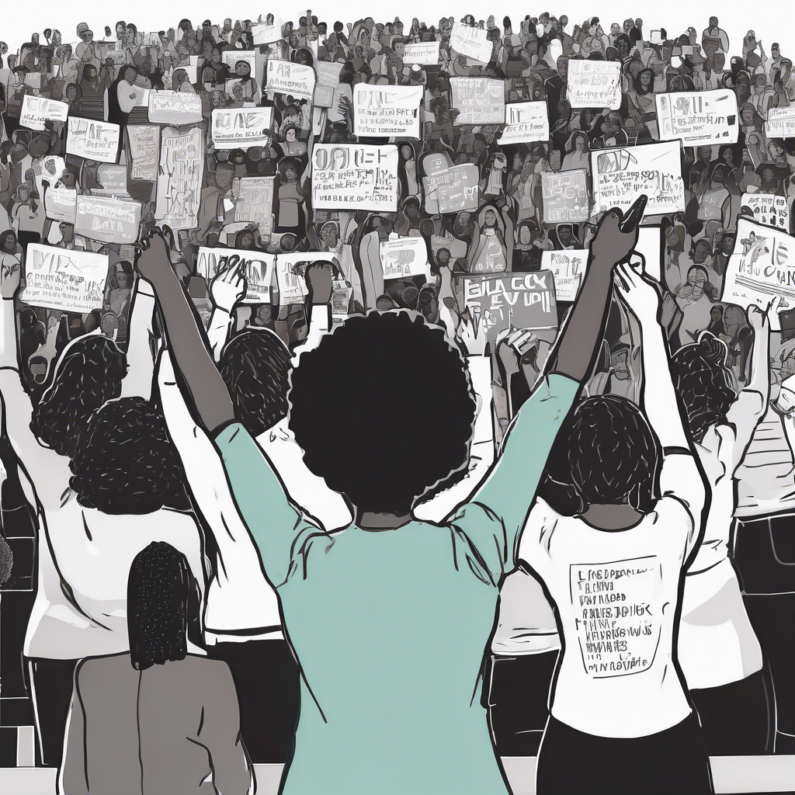
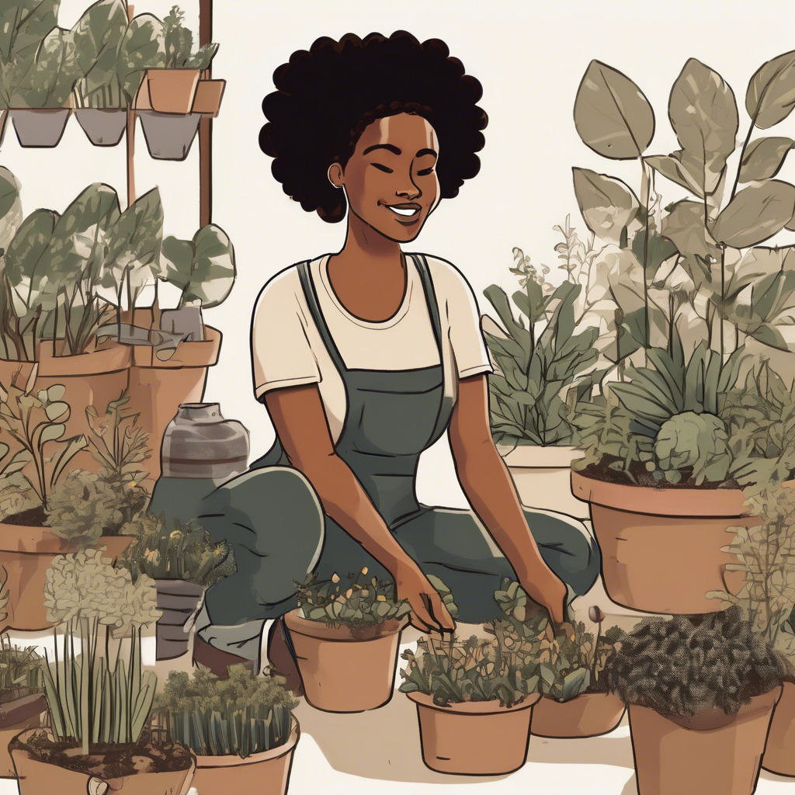
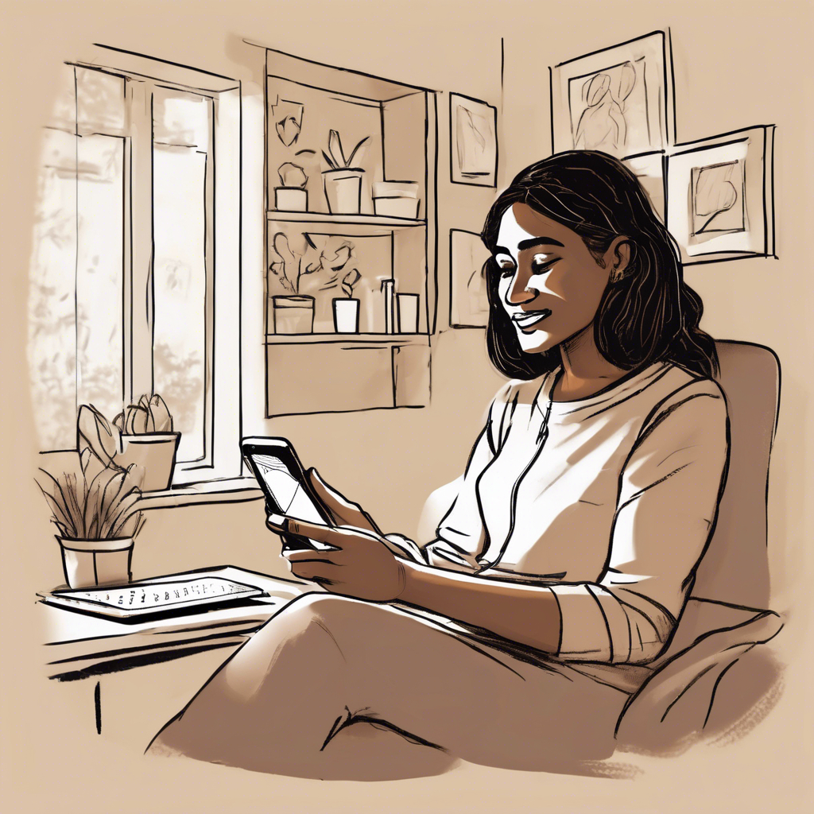
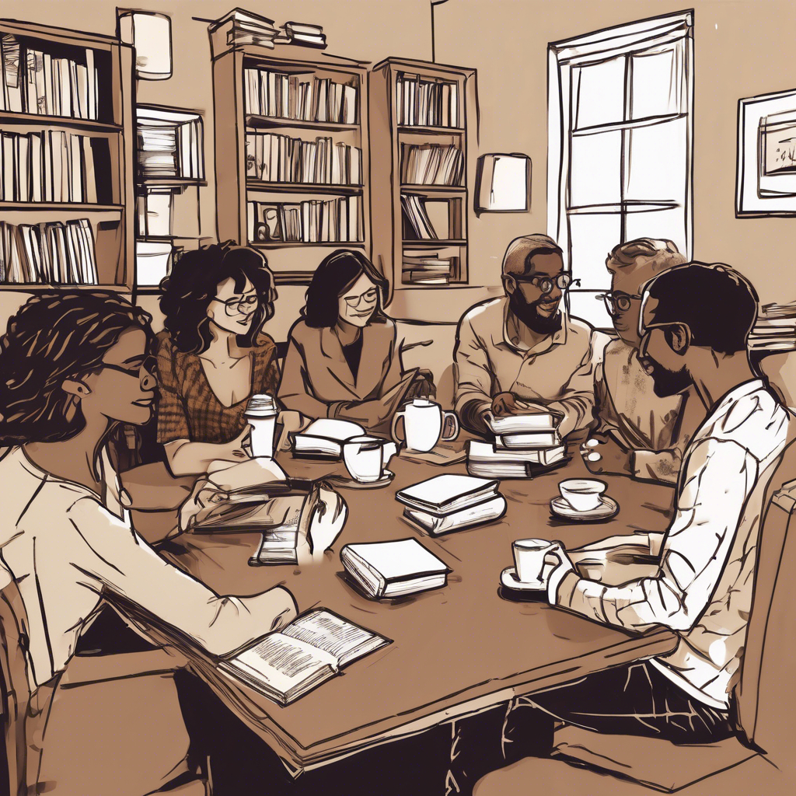
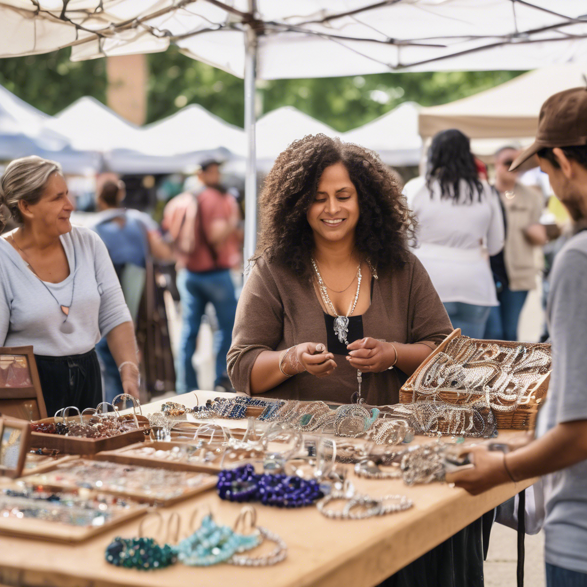
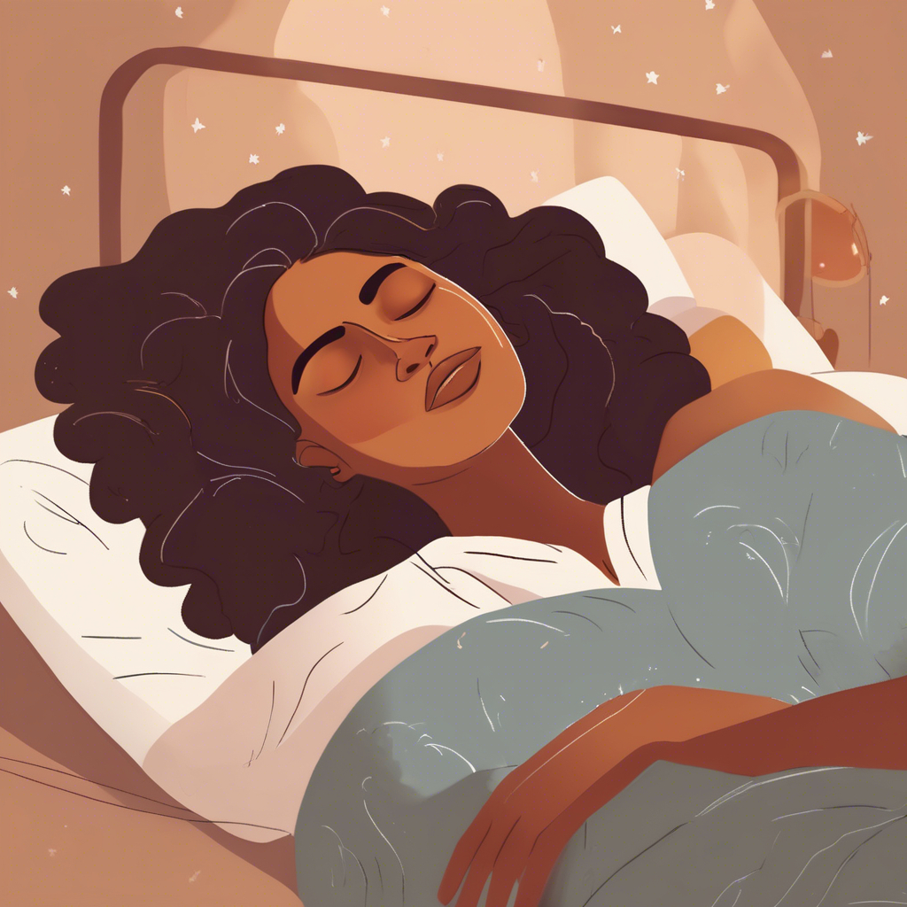

“In times like these, you learn to live again.” The Foo Fighters' lyrics ring truer now than ever. We are living in a moment of profound uncertainty—where the stability we once relied on seems to shift by the day. Job losses, political turmoil, the erosion of long-standing public health protections, and the weight of simply existing in a world that often feels like it’s unraveling can leave us feeling exhausted, overwhelmed, and unsure of where to turn. But in times like these, we also find ourselves again, we find strength, and new ways to reclaim control over our well-being.
The Institute for the Advancement of Women's Health presents these 10 Tips as a guide to navigating this turbulent era with intention, purpose, and care. These aren’t just about self-care in the trendy, fleeting sense, but about real, actionable ways to stay grounded, connected, and empowered. It might take a little time, work, and commitment, but it will be well spent. From choosing an issue to follow and support to reconnecting with community, prioritizing health, and even trying something completely new, each tip is a reminder that we still have power over how we move through this moment. This is about more than just surviving—it’s about thriving, despite the uncertainty.
Click the Arrow or Carrot Beside Each Tip Below.
Tip 1: Choose An Issue to Study and Follow
In times of uncertainty, finding a cause that resonates with you can provide
Online Information Gathering
both purpose and stability. Whether it’s the social safety net, foreign relations, following the fight for environmental justice, or keeping up with local politics, choosing an issue to follow and learning all you can about it, gives you a sense of agency in a world that often feels chaotic. Staying informed and taking action, whether through volunteering, donating, or simply spreading awareness, helps you stay connected to your values and build resilience. More importantly, investing in a cause that fulfills you fosters a sense of control, reminding you that even in turbulent times, your voice and efforts matter.
Tip 2: Get Your Hands in the Dirt
Gardening and Enjoying Nature
There’s something deeply healing about getting your hands into the earth, whether it’s planting a vegetable garden, tending to flowers, or simply pulling weeds. Gardening and outdoor work connect you to the rhythm of nature, offering a sense of grounding and peace in uncertain times. Beyond the physical benefits of fresh air and movement, caring for plants nurtures patience, resilience, and a reminder that growth often comes from struggle. Even if you don’t have a garden, spending time in nature, cleaning up trails, planting in community spaces, or simply walking in a park, can restore balance. And when you share your harvest, whether it’s tomatoes from your backyard or a bouquet of wildflowers, you’re not just cultivating plants, you’re cultivating connection, generosity, and joy.
Tip 3: Remember Where You Come From
Belt out that song!
Before life became a never-ending cycle of responsibilities, stress, and emails, there was joy in the simple things. Take time to revisit the activities that once made you laugh, dream, and feel free. Play a game of jacks or checkers, dust off that old board game, or dive into a stack of comic books that once transported you to another world. Put on your favorite gospel song and belt it out like you’re the lead soloist in a packed church. Adult coloring books, vintage magazines, even flipping through childhood photo albums can be surprisingly therapeutic. These small, nostalgic moments remind you of who you are at your core, before the world told you who to be. Reclaiming that joy is not just self-care; it’s an act of self-preservation.
Tip 4: Listen to Someone Else
In the midst of your own struggles, it can be easy to get lost in your worries, but sometimes the best way to find clarity is by holding space for someone else. Right off this doesn't sound like self-care, but it can be. Be the person who truly listens, not to respond, not to compare struggles, but simply to
Cozy Coffee Shop Chat
hear. When a friend, family member, or colleague needs a sounding board, offer them your full attention. You don’t need to have solutions or advice; often, people just need to feel seen and heard. In doing so, you not only lighten their burden but also momentarily step outside of your own worries. Compassion is a two-way street, by being there for others, you cultivate deeper connections and remind yourself that none of us are in this alone.
Tip 5: Keep Social Justice Alive
Just because the government is trying to erase the language of diversity, equity, and inclusion doesn’t mean the fight is over, it means the fight is more important than ever. Women have always been the backbone of movements for change, and this moment is no different. If the powers that be think they can silence the issues that impact women, minorities, and
Keeping Social Justice Alive
marginalized communities, they are sorely mistaken. The policies may shift, but the need for justice, fairness, and human dignity remains. If anything, now is the time to dig in deeper.
Stay involved. Speak up. Find grassroots organizations, local advocacy groups, or even online communities that are still doing the work, because the work is happening, whether the government acknowledges it or not. Support women’s health initiatives, amplify the voices of those being silenced, and use every tool available to keep the momentum alive. Change has never started from the top down; it has always been fueled by those who refuse to back down. Be one of those people. Keep pushing, keep showing up, and let them know that social justice isn’t a trend, it’s a necessity, and it’s here to stay.
Tip 6: Connect, Reconnect, or Create Community

Book club with coffee
In times like these, when the world feels upside down, community is not just a luxury, it’s a lifeline. We thrive when we are connected, yet maintaining those connections can sometimes feel like just another task on an endless to-do list. But now, more than ever, we need each other. Reach out to the women in your neighborhood, reconnect with old friends, or build something new from the ground up. Whether it’s reviving a street club, organizing a block party, or starting a book club, these small acts of gathering can foster strength, laughter, and solidarity. Consider forming a "ladies who lunch" group to mix, mingle, and share ideas on everything from business to self-care. Start a skills-swap circle where women can teach each other everything from financial literacy to home gardening. Host a rotating Sunday supper club where everyone brings a dish and a story to share. Don't forget church worship and Bible study can count as community too. Community doesn’t have to be massive; it just has to be meaningful. When we stand together, listen to each other, and lift each other up, we remind ourselves that no matter what chaos is happening in the world, we are not alone.
Tip 7: Take Your Physical and Mental Health Seriously
One-on-one Telehealth Therapy Session
Your health, both physical and mental, is not a luxury; it’s a necessity. The weight of uncertainty, job loss, financial instability, tanking 401Ks and pensions, and the constant barrage of bad news can take a serious toll. Stress, anxiety, and fear don’t just live in your mind; they manifest in your body, tight shoulders, sleepless nights, headaches, and fatigue. Now is the time to prioritize yourself. Move your body, whether it’s through walking, yoga, dancing in your living room, or hitting the gym. Eat well, hydrate, and rest like your peace depends on it, because it does. And don’t hesitate to seek professional support. Therapy is not just for when things fall apart, it’s for staying whole. A licensed therapist can help you process emotions, develop coping strategies, and reclaim control over your well-being. But healing isn’t just in a therapist’s office. Try meditation, journaling, deep breathing exercises, or simply allowing yourself the space to feel and release. Check in with yourself daily and ask, What do I need today? Then honor that answer. You are your greatest investment - take care of you.
Tip 8: Follow That Great Idea
That idea that keeps whispering in the back of your mind? It’s time to stop ignoring it and start chasing it. Whether it’s launching a business, writing that book, starting a podcast, or selling your handmade jewelry at the local farmer’s market, your passions are worth pursuing. The world needs what only you can create.

Selling Her Hand-made Jewelry at Farmers Market
Don’t let fear or self-doubt keep you stuck. Break it down: What do you need? Resources? A mentor? A community of like-minded women? Do the research, make a plan, and take the first step, no matter how small. Success doesn’t happen overnight, but consistency and courage will get you there. You are capable, brilliant, and powerful. So go ahead, follow that great idea, and watch it turn into something extraordinary!
Tip 9: Get Your Sleep
We hear it all the time: Get more sleep! Remember how happy and relieved Dorothy looked when she woke up at the end of the Wizard of Oz. Well, we don't want you to get knocked over the head by flying furniture from a cyclone or get to sleep by falling into a field of poppies, but we do encourage you to get some good deep sleep.

Between work stress, family responsibilities, endless to-do lists, and the weight of the world, how realistic is that? Still, the truth remains, your body needs sleep just as much as it needs food and water. Chronic sleep deprivation has been linked to increased risks of heart disease, high blood pressure, obesity, depression, and even cognitive decline. For women, hormonal fluctuations throughout life, from pregnancy to menopause, can make sleep even more elusive, but that doesn't mean it should be ignored.
So, what can you do? Create a nighttime routine, dim the lights, cut screen time before bed, and stick to a schedule. Try calming teas, white noise, or relaxation techniques like meditation and deep breathing. If sleep remains a struggle, don’t hesitate to consider a sleep study; conditions like sleep apnea or insomnia could be sabotaging your rest without you realizing it. Your energy, mental clarity, and overall well-being depend on quality sleep, so stop treating it as a luxury, it’s a necessity. Prioritize your rest and watch how everything else in your life improves.
Tip 10: Try Something New
Stepping outside of your comfort zone and trying something new can be a powerful way to reset your mind, body, and spirit. Whether it’s exploring a new wellness practice or deepening your connection to your body and the natural world, these experiences can be transformative. Here are a few unique ways to nourish yourself:
Being in Nature
- Forest Bathing (Shinrin-Yoku) – This Japanese practice isn’t about hiking or exercising but simply being in nature, walking slowly, breathing deeply, and fully absorbing the sights, sounds, and smells of the forest. Studies show that spending time among trees can lower blood pressure, reduce cortisol (the stress hormone), and boost the immune system.
- Sound Bathing – Using vibrational sound therapy from instruments like gongs, singing bowls, and chimes, sound baths allow participants to enter a deep meditative state. The frequencies help calm the nervous system, reduce stress, and even promote better sleep. You don’t have to do anything, just lie down, listen, and let the waves of sound wash over you.
- Group Yoga & Facilitated Meditation – Moving your body through yoga postures or sitting in stillness during guided meditation in a group setting can provide both community support and personal growth. Whether you choose a gentle yin yoga class, a powerful vinyasa session, or a simple breathwork meditation, these practices enhance mental clarity, improve flexibility, and help regulate stress and anxiety.
- No Meat Monday (or Any Day!) – Taking a break from meat even just once a week has both physical and environmental benefits. Eating more plant-based meals can lower cholesterol, reduce the risk of heart disease, and improve digestion. On a global scale, reducing meat consumption helps lower greenhouse gas emissions, conserve water, and reduce deforestation. Plus, it’s an opportunity to explore delicious new foods and creative, nutrient-rich meals.
These holistic practices bring together community, self-care, and mindfulness, all of which contribute to better sleep, reduced stress, and improved overall health. If you’ve been feeling disconnected or overwhelmed, trying something new, whether it’s a calming sound bath, a rejuvenating forest walk, a fresh plant-based meal, or a collective meditation session, could be the key to revitalizing your mind and body. Step into a new experience, you might just find exactly what you’ve been needing.
Share this message with a friend.
Cheryl Thompson, MSPHCo-Director, IAWH
This article first appeared on the IAWH Health blog on April 4, 2025 and is preserved here as part of the IAWH Health Journal archive. Information reflects what was known at the time of publication. This article is for general education and is not medical advice.
Topics: Anxiety, Self-Care